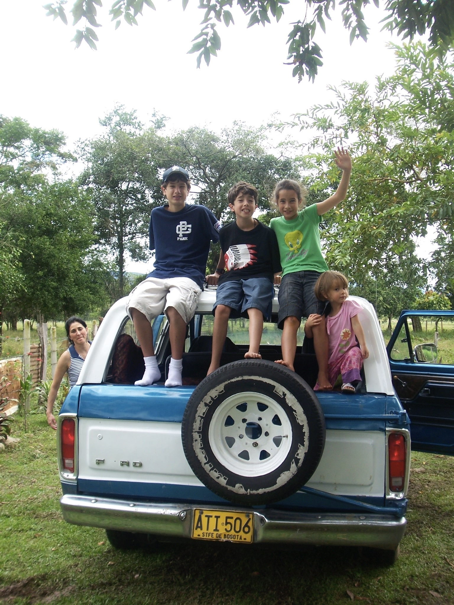

Her siblings
Anamaria Garberding is currently a sophomore at the University of Wisconsin-Madison. She's majoring in Information Science and plans to graduate in May 2027. Anamaria is very involved on campus. She's a selected member of Women in Business Technology, a club that supports one another through development activities and workshops. She's also part of Student Body for Social Business, a club that focuses on how businesses can incorporate sustainability. Through these clubs, she's had the chance to attend networking and career development events with alumni working in business technology or related fields. Throughout her time in college, she's gained hands-on experience in coding, data analytics, and collaboration. She's worked on projects involving R programming and Python, which taught her to become a critical thinker and problem solver. Anamaria loves to learn, and is eager to apply her skills in real scenarios.